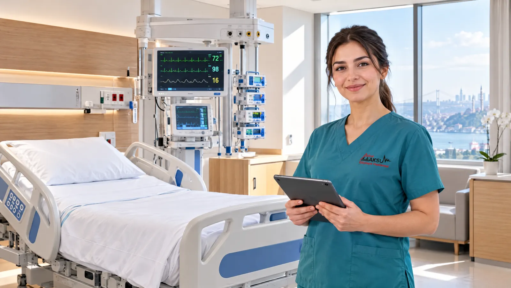

Yoğun bakımda hastanıza ne yapılıyor?
Yoğun bakım, hayati fonksiyonları desteğe ihtiyaç duyan hastaların gece gündüz izlendiği ünitedir. Kalp ritmi, tansiyon ve oksijen düzeyi monitörlerde sürekli görünür. Gerekirse bir solunum cihazı nefes almaya yardım eder. Hekim ve hemşireler hastanın başında, olası bir değişikliği hemen fark edecek biçimde çalışır.
Ünite ilk bakışta ürkütücü görünebilir. Hastanızın üzerinde kablolar, serum hatları ve sık sık sesli uyarı veren cihazlar görürsünüz. Bu seslerin çoğu tehlike anlamına gelmez; cihazlar küçük değişiklikleri de ekibe bildirir. Hastanız uyutuluyor ya da konuşamıyor olabilir. Ekip izin verdiğinde ona sakin bir sesle seslenebilir, elini tutabilirsiniz.
Hastanızın durumunu size yoğun bakım hekimi anlatır. Bu görüşme yüz yüze ve ünitenin belirlediği saatte olur. Aynı bilgiyi her gün farklı kişilere tekrarlamak, hekimin hastaya ayıracağı zamanı azaltır. Bu yüzden aileden bir kişiyi sözcü seçmenizi rica ediyoruz. Telefonla ayrıntılı tıbbi bilgi paylaşmıyoruz; çünkü arayanın kimliğini doğrulamak mümkün olmuyor.

Bir hasta neden yoğun bakıma alınır?
- Solunumun yetersiz kaldığı, nefes desteği gereken durumlar
- Tansiyonu ayakta tutmak için sürekli ilaç gereken ağır enfeksiyonlar
- Büyük ya da uzun süren ameliyatlardan sonraki ilk saatler
- Ağır kaza ve kafa travması sonrası yakın izlem
- Bilinç kaybı, uzun süren nöbet ya da inme
- Kalp krizi, ciddi ritim bozukluğu veya kalp yetmezliği atağı
- Birden fazla organın etkilendiği ağır hastalık tabloları
- Ağır zehirlenme ve alerjik şok
Acil durumda beklemeyin
Yoğun bakıma dışarıdan doğrudan başvuramazsınız; hastalar üniteye acil servis, ameliyathane ya da servis üzerinden gelir. Evdeki bir yakınınızda bilinç bulanıklığı, belirgin nefes darlığı ya da morarma görürseniz vakit kaybetmeden 112'yi arayın.
Yoğun bakımda izlenen hasta grupları
- Ameliyat sonrası yakın gözlem gereken hastalar
- Zatürre ve solunum yetmezliği
- Sepsis (kana yayılan ağır enfeksiyon)
- Kalp krizi ve ritim bozukluğu sonrası izlem
- İnme ve beyin kanaması
- Kafa travması ve çoklu yaralanmalar
- KOAH ve astımın ağır alevlenmeleri
- Şeker hastalığına bağlı ağır dengesizlikler
- Uzun süren epileptik nöbetler
- Ağır sıvı ve tuz dengesizlikleri
- İlaç ve kimyasal madde zehirlenmeleri
Ünitede hastanıza sağlanan destekler
Sürekli monitörizasyon
Kalp ritmi, tansiyon, solunum ve oksijen düzeyi ekranda aralıksız izlenir. Değerler belirlenen sınırın dışına çıktığında cihaz ekibi uyarır.
Solunum desteği
Maskeyle verilen oksijenden solunum cihazına kadar uzanan destek. Cihaza bağlı hasta, rahat etmesi için çoğu zaman uyutularak izlenir.
Damar yolundan tedavi
Serum, kan ürünleri ve ilaçlar infüzyon pompalarıyla ayarlı hızda verilir. Böylece tansiyon ve şeker gibi değerler yakından düzenlenir.
Kan gazı ve tahliller
Kandaki oksijen, karbondioksit ve asit dengesi gün içinde birkaç kez ölçülür. Sonuçlar solunum cihazının ayarlarını ve tedaviyi yönlendirir.
Bası yarası ve pıhtı önleme
Uzun süre yatan hastanın pozisyonu düzenli aralıklarla değiştirilir. Bacaklarda pıhtı oluşmaması için ekip gerekli önlemleri alır.
Hasta yakını olarak size düşenler
- Aileden bilgi alacak bir sözcü belirleyin ve telefon numarasını ekiple paylaşın
- Hastanın kullandığı ilaçları, alerjilerini ve geçmiş ameliyatlarını hemşireye iletin
- Ziyaretten önce ve sonra ellerinizi yıkayın ya da dezenfektan kullanın
- Ateşiniz, öksürüğünüz veya ishaliniz varsa ziyareti erteleyin
- Çiçek, yiyecek ya da evden eşya getirmeden önce ekibe danışın
- Diğer hastaların mahremiyeti için ünitede fotoğraf çekmeyin
Yoğun Bakım hekimleri

Yakını yoğun bakımda olanların soruları
Yoğun bakım ziyaretini ne zaman yapabilirim?
Ziyaret saatini ve süresini ünite, hastaların durumuna göre belirler. Gelmeden önce 0216 565 40 65 numaralı santrali arayarak güncel düzeni öğrenin. Aynı anda kaç kişinin girebileceğini de ekip söyler. Hastanızın o sırada bir işlemi varsa kısa bir süre beklemeniz gerekebilir.
Yoğun bakımda hastamın yanında kalabilir miyim?
Yoğun bakımda hastanın yanında sürekli refakatçi kalmaz. Hemşireler her hastayı gece gündüz izler ve bakımını üstlenir. Hastanın kendini ifade edemediği ya da çok huzursuz olduğu özel durumlarda hekim, bir yakının kısa süre yanında bulunmasına izin verebilir.
Hastam uyutuluyor dediler. Bu ne anlama geliyor?
Solunum cihazına bağlı hastaları, cihaza uyum sağlamaları ve acı hissetmemeleri için ilaçla derin bir uykuda tutarız. Buna sedasyon denir. Durum düzeldikçe ekip ilaç dozunu azaltır ve hastayı kademeli olarak uyandırır. Uyanma süresi kişiden kişiye değişir; birkaç saat de sürebilir, günler de.
Hastam ne zaman normal odaya geçer?
Hekim servise geçişi üç koşul sağlandığında planlar: hastanın kendi başına yeterli nefes alması, tansiyonun ilaç desteği olmadan dengede kalması ve sürekli monitör izlemine gerek kalmaması. Bu koşulları ekip her gün yeniden değerlendirir. Geçiş günü size önceden haber veririz; serviste refakat kuralları farklıdır.
Uzaktaki aile üyeleri nasıl bilgi alabilir?
Bilgiyi ailenin belirlediği sözcüye vermeyi tercih ediyoruz. Sözcü, öğrendiklerini diğer yakınlarla paylaşabilir. Telefonla ayrıntılı bilgi vermediğimiz için uzaktaki yakınlarınızın sözcüyle iletişimde kalması daha güvenli bir yoldur.
Bu sayfayı Uzm. Dr. Gülşen Akbulut gözden geçirdi. Son güncelleme: 7 Ekim 2026.